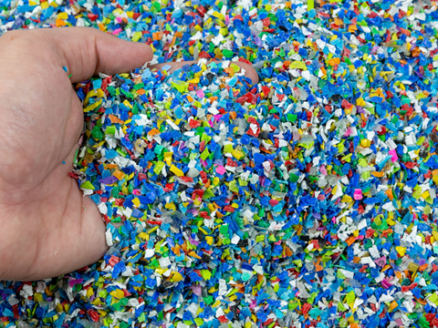

What is made from recycled waste
- Hangers, chairs, garbage bags, work clothes, shoes, fleece, covers for equipment, cars and
finishing materials
are made from old plastic.
- Glass waste is used to make bottles, jars, glass and glass-ceramic tiles, water filtration
compounds, smalt and
mosaic glass.
- Recycled metal is used to make cars, household appliances, sports equipment and even
children's
toys. At the
same time, air pollution during production is reduced by 95%.
Useful life hacks
- Disposable cups and plastic bottles can be replaced with reusable mugs and thermoses.
- Use shopping bags or cloth shopping bags. The package will no longer tear and will not have to
be thrown away.
- Instead of small disposable bags, mesh bags can be used. Vegetables and fruits can be weighed
directly into
them.
- Avoid paper checks at ATMs whenever possible. They can be replaced with electronic ones, but,
alas, they cannot
be recycled.
- Do not use a bag if you are buying items by weight by the piece. The price tag can be glued
simply on the peel
of a banana or pineapple.
- Discard excess waste paper. Today, almost every store has an application or website where you
can track
promotions.


